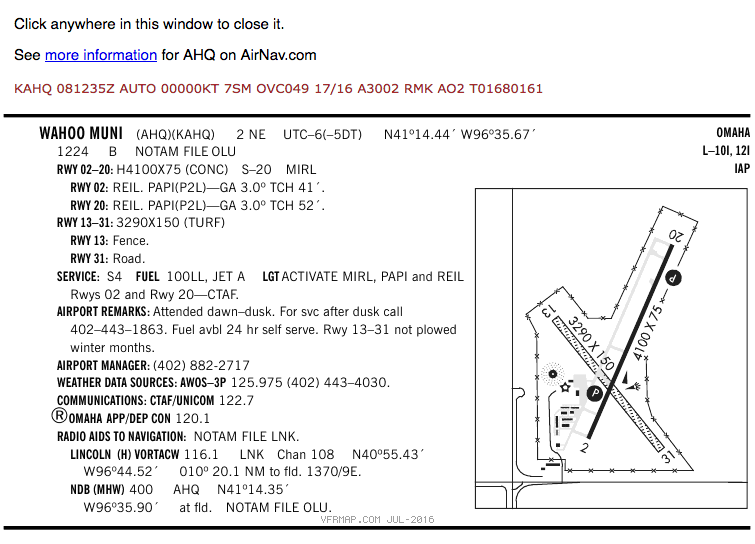

Chapter 10 Airport Operations and Radio Procedures
Read Chapter 14 in the Pilot’s Handbook of Aeronautical Knowledge
Under Part 107, you are not required to communicate with ATC directly like manned aircraft must, but if you are going to operate in controlled airspace or near an airport, you may be required by ATC to be able to monitor traffic frequencies for situational awareness.
There are two types of airports:
- Non-towered, which means there is no control tower. At non-towered airports, pilots are supposed to radio their positions over a Common Traffic Advisory Frequency (CTAF) to inform other pilots where they are, though not all do, and some forget a call or two.
- Towered airport, which means there is an ATC run tower at the airport and two-way communication is required with the tower to operate at the airport. Pilots will NOT call out their location in the traffic pattern at towered airports.
There are also heliports and seaplane bases throughout the country marked on Sectional Charts. They are far less common than other airports.
10.0.1 Runway markings and signage
Since UAS are not allowed to interfere with airport operations, and flying close enough for you to read airport markings and signage from the ground would most certainly do that, I’m not sure why the FAA says this is important for you to know. The most critical runway marking for you to learn is the number at the end of the runway. That two-digit number represents the magnetic heading of the runway. Headings are rounded to the nearest 10 and the zero is dropped from the number. So a runway 350, 10 degrees west of due north, is designated runway 35. Both ends of the runway are designated, by their heading. The other end of runway 35 would be runway 17, 10 degrees east of due south.
Manned aircraft take off and land into the wind. If an airport has multiple runways, takeoff and landing will occur in the direction most favorable to headwinds. At towered airports, ATC will direct pilots to the operable runway, and the runway will be designated in ATIS broadcasts.
ATIS: Automated Terminal Information Service: An automated or pre-recorded radio broadcast of important information at the airport, including winds and operating runways. Manned pilots listen to ATIS as part of pre-flight and must inform ATC that they have the latest information, designated by a phonetic alphabet letter. Ex. Information Alpha, Information Bravo, Information Charlie.
AWOS: Automated Weather Observation System: Similar to ATIS, it will be a computerized recording of weather information at the airfield. It will include wind direction and speed, which will guide you toward which runway will be in use.
10.0.2 Sources for airport data
Information about the airport and its traffic procedures can be found in the AFD, on Sectional Charts and through NOTAMs.


The most important things you are looking for as a UAS pilot:
- The CTAF/UNICOM or tower frequency for traffic awareness at a non-towered airport.
- The CT or Control Tower frequency at a towered airport.
- The ATIS or AWOS frequency for information about which runway is in use and other weather information.
10.0.3 Traffic patterns
Each airport will have a standard traffic pattern for landing and departing aircraft. For drone pilots flying near airports, the key is to know where to expect aircraft flying in the traffic pattern. Pattern flight is considered a critical phase of manned flight, and the pilot is managing a lot of information and executing tasks for landing and takeoff. The reason the FAA wants you to know traffic patterns is so you can see and avoid particularly vulnerable aircraft and pilots focused elsewhere.
The standard traffic pattern around most airports is a rectangle of all left turns. For small manned aircraft (i.e. not jets or multi-engine aircraft), the pattern is usually contained within a mile of the airport, though ATC can and does extend different portions for traffic separation. Each leg of the rectangle is named:
- Departure, or upwind: The leg immediately after takeoff. The aircraft on an upwind leg will be climbing toward the traffic pattern altitude, which is normally 1,000 feet AGL. If the aircraft is going to remain in the traffic pattern, they will turn 90 degrees to the crosswind leg. If they intend to depart the pattern, they’ll exit either straight on course out of the upwind leg, or turn 45 degrees left or right of the upwind leg and depart.
- Crosswind: The first turn after the upwind leg, turning perpendicular to the runway. The aircraft will still be climbing on this portion but should be close to traffic pattern altitude (TPA).
- Downwind: The aircraft is now parallel with the runway. The downwind leg is important for two reasons: First, abeam the end of the runway, the aircraft will begin to descend. Second, aircraft entering the pattern are instructed to enter the downwind leg at at 45 degree angle abeam the midpoint of the runway.
- Base: The aircraft is descending perpendicular to the runway and slowing down.
- Final: The landing leg of the pattern. The aircraft will be at its lowest and slowest on this leg, which gives the pilot little margin to avoid obstacles.
Not all airports can follow the left turn pattern. Some, with parallel runways, will orient the pattern away from the other runway – one left, one right – and include a No Transgression Zone between them that pilots cannot enter for collision avoidance. Some airports have obstacles or development on one side of the runway that prevent a safe traffic pattern over it. If the traffic pattern is non-standard, it will be noted in the AFD.
10.1 Radio Procedures
Pilots at non-towered airports are required to self-announce their position at the airport on the CTAF. There’s several layers to it, but it follows a pattern.
Most small aircraft will identify themselves on radio by their make and registration number. In the example from Wahoo, we used Cessna 123 Alpha Bravo, or 123AB. Some pilots will use the model name, like Skywatcher 123 Alpha Bravo. Commercial flights will identify with the airline and flight number – “United 1234”. Military aircraft most often will have a callsign. For example, the Lincoln Air National Guard KC-135 tanker planes are called “Husker Heavy [number]” on ATC Radio calls. Knowing the pattern of how the aircraft identifies itself on the radio will tell you a little about the plane, how fast it will appear near the field and how you can expect it to act once it’s near the airfield. For instance, a Skywatcher 162 Light Sport aircraft will take nearly 10 minutes from first contact with the tower to the airport pattern because it cruises between 70 and 80 miles per hour. Jets, military aircraft and fast-moving propeller aircraft will contact the tower earlier in the approach and appear much quicker because of their much greater air speed.
The FAA wants you to know this in the name of improved situational awareness.
10.1.1 The phonetic alphabet
ATC and pilots will use a phonetic alphabet common to military members and used in aviation around the world.
| Letter | Phonetic pronunciation |
|---|---|
| A | Alpha |
| B | Bravo |
| C | Charlie |
| D | Delta |
| E | Echo |
| F | Foxtrot |
| G | Golf |
| H | Hotel |
| I | India |
| J | Juliet |
| K | Kilo |
| L | Lima |
| M | Mike |
| N | November |
| O | Oscar |
| P | Papa |
| Q | Quebec |
| R | Romeo |
| S | Sierra |
| T | Tango |
| U | Uniform |
| V | Victor |
| W | Whiskey |
| X | X-Ray |
| Y | Yankee |
| Z | Zulu |
10.1.2 Airport traffic calls
Pilots at non-towered airports must report their positions in the traffic pattern via radio over the CTAF or UNICOM freqency. The pattern goes like this: “[airport name] traffic, [call sign] is [position] of runway [operating runway], [airport name] traffic.”
UAS pilots flying near the Wahoo, Neb. airport, a non-towered airport north of Lincoln, which is Class G airspace at the ground, could expect to hear these broadcasts on an aviation radio.
“Wahoo traffic, Cessna 123 Alpha Bravo is downwind of runway Two Zero, Wahoo traffic.”
“Wahoo traffic, Cessna 123 Alpha Bravo is on base for runway Two Zero, Wahoo traffic.”
“Wahoo traffic, Cessna 123 Alpha Bravo is on final for runway Two Zero, Wahoo traffic.”
10.1.3 Phraseology
There are three elements of phraseology that will come up not yet discussed.
- Many texts and many pilots will say “NINE-ER” instead of 9. Flying, I’ve heard it both ways, and my instructor rolled her eyes when I used it one day.
- Complex numbers are individually spelled out. 123 is One Two Three. The most common numbers you will hear are wind updates and radio frequencies. Manned pilots exiting a towered airspace are told to switch frequencies to Approach/Departure control. In Lincoln, when you depart the traffic pattern, you are told to go to Omaha Approach at “One Two Four point Zero” instead of One hundred twenty four point zero.
- Manned pilots in towered environments are required to read back instructions to ATC after being given and instruction. A common circumstance is for ATC to alter the pattern of an aircraft to create separating between multiple aircraft at the airfield. On the radio, you would hear “Cessna 60471, Lincoln Tower, Extend Your Downwind” and the pilot must respond “Lincoln Tower, Cessna 60471, Extending my downwind” or the tower will repeat the call with less politeness.
- The pattern when speaking on the radio is “Who am I calling, Who am I, What do I want”.